전자기사 (2022-03-05 기출문제)
1과목: 전기자기학
1. 진공 중 반지름이 a(m)인 무한길이의 원통 도체 2개가 간격 d(m)로 평행하게 배치되어 있다. 두 도체 사이의 정전용량(C)을 나타낸 것으로 옳은 것은?
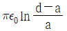
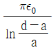
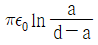
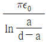
(정답률: 55%)

2. 진공 중 한 변의 길이가 0.1m인 정삼각형의 3정점 A, B, C에 각각 2.0×10-6C의 점전하가 있을 때, 점 A의 전하에 작용하는 힘은 몇 N 인가?
- 1.8√2
- 1.8√3
- 3.6√2
- 3.6√3
(정답률: 19%)
3. 진공 내 전위함수가 V = x2 + y2(V)로 주어졌을 때, 0≤x≤1, 0≤y≤1, 0≤z≤1인 공간에 저장되는 정전에너지(J)는?
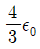
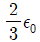
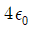
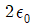
(정답률: 28%)
4. 자극의 세기가 7.4×10-5Wb, 길이가 10cm인 막대자석이 100AT/m의 평등자계 내에 자계의 방향과 30°로 놓여 있을 때 이 자석에 작용하는 회전력(N·m)은?
- 2.5×10-3
- 3.7×10-4
- 5.3×10-5
- 6.2×10-6
(정답률: 46%)
5. 공기 중에서 1V/m의 전계의 세기에 의한 변위전류밀도의 크기를 2A/m2으로 흐르게 하려면 전계의 주파수는 몇 MHz 가 되어야 하는가?
- 9000
- 18000
- 36000
- 72000
(정답률: 37%)
6. 반지름이 a(m)인 접지된 구도체와 구도체의 중심에서 거리 d(m) 떨어진 곳에 점전하게 존재할 때, 점전하에 의한 접지된 구도체에서의 영상전하에 대한 설명으로 틀린 것은?
- 영상전하는 구도체 내부에 존재한다.
- 영상전하는 점전하와 구도체 중심을 이은 직선상에 존재한다.
- 영상전하의 전하량과 점전하의 전하량은 크기는 같고 부호는 반대이다.
- 영상전하의 위치는 구도체의 중심과 점전하 사이 거리(d(m))와 구도체의 반지름(a(m))에 의해 결정된다.
(정답률: 28%)
7. 투자율이 μ(H/m), 자계의 세기가 H(AT/m), 자속밀도가 B(Wb/m2)인 곳에서의 자계 에너지 밀도(J/m3)는?
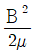
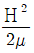
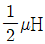
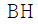
(정답률: 55%)
8. z축 상에 놓인 길이가 긴 직선 도체에 10A의 전류가 +z 방향으로 흐르고 있다. 이 도체의 주위의 자속밀도가
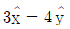
Wb/m2 일 때 도체가 받는 단위 길이당 힘(N/m)은? (단,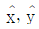
는 단위벡터이다.)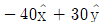
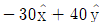
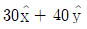
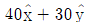
(정답률: 10%)
9. 평행 극판 사이의 간격이 d(m)이고 정전용량이 0.3μF인 공기 커패시터가 있다. 그림과 같이 두 극판 사이에 비유전율이 5인 유전체를 절반 두께 만큼 넣었을 때 이 커패시터의 정전용량은 몇 μF 이 되는가?
- 0.01
- 0.⑤
- 0.1
- 0.5
(정답률: 28%)
10. 평등 전계 중에 유전체 구에 의한 전계 분포가 그림과 같이 되었을 때 ε1과 ε2의 크기 관계는?(문제 오류로 가답안 발표시 2번으로 발표되었지만 확정답안 발표시 모두 정답처리 되었습니다. 여기서는 가답안인 2번을 누르면 정답 처리 됩니다.)
- ε1 ＞ ε2
- ε1 ＜ ε2
- ε1 = ε2
- 무관하다.
(정답률: 46%)
11. 진공 중에 4m 간격으로 평행한 두 개의 무한 평판 도체에 각각 +4 C/m2, -4 C/m2의 전하를 주었을 때, 두 도체 간의 전위차는 약 몇 V 인가?
- 1.36×1011
- 1.36×1012
- 1.8×1011
- 1.8×1012
(정답률: 19%)
12. 내부 원통 도체의 반지름이 a(m), 외부 원통 도체의 반지름이 b(m)인 동축 원통 도체에서 내외 도체 간 물질의 도전율이 σ(℧/m)일 때 내외 도체 간의 단위 길이당 컨덕턴스(℧/m)는?
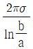
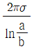
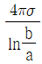
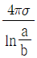
(정답률: 46%)
13. 어떤 도체에 교류 전류가 흐를 때 도체에서 나타나는 표피 효과에 대한 설명으로 틀린 것은?
- 도체 중심부보다 도체 표면부에 더 많은 전류가 흐르는 것을 표피 효과라 한다.
- 전류의 주파수가 높을수록 표피 효과는 작아진다.
- 도체의 도전율이 클수록 표피 효과는 커진다.
- 도체의 투자율이 클수록 표피 효과는 커진다.
(정답률: 37%)
14. 진공 중에 4m의 간격으로 놓여진 평행 도선에 같은 크기의 왕복 전류가 흐를 때 단위 길이당 2.0×10-7N의 힘이 작용하였다. 이때 평행 도선에 흐르는 전류는 몇 A 인가?
- 1
- 2
- 4
- 8
(정답률: 10%)
15. 인덕턴스(H)의 단위를 나타낸 것으로 틀린 것은?
- Ω·s
- Wb/A
- J/A2
- N/(A·m)
(정답률: 28%)
16. 유전율이 ε = 2ε0이고 투자율이 μ0인 비도선성 유전체에서 전자파의 전계의 세기가
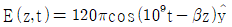
V/m 일 때, 자계의 세기 H(A/m)는? (단,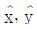
는 단위벡터이다.)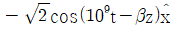
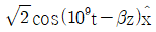
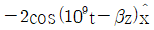
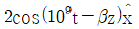
(정답률: 19%)
17. 자기회로에서 전기회로의 도전율 σ(℧/m)에 대응되는 것은?
- 자속
- 기자력
- 투자율
- 자기저항
(정답률: 46%)
18. 단면적이 균일한 환상철심에 권수 1000회인 A코일과 권수 NB회인 B 코일이 감겨져 있다. A코일의 자기 인덕턴스가 100mH이고, 두 코일 사이의 상호 인덕턴스가 20mH이고, 결합계수가 1일 때, B코일의 권수(NB)는 몇 회인가?
- 100
- 200
- 300
- 400
(정답률: 37%)
19. 전계가 유리에서 공기로 입사할 때 입사각 θ1과 굴절각 θ2의 관계와 유리에서의 전계 E1과 공기에서의 전계 E2의 관계는?
- θ1 ＞ θ2, E1 ＞ E2
- θ1 ＜ θ2, E1 ＞ E2
- θ1 ＞ θ2, E1 ＜ E2
- θ1 ＜ θ2, E1 ＜ E2
(정답률: 37%)
20. 면적이 0.02m2, 간격이 0.03m이고, 공기로 채워진 평행평판의 커패시터에 1.0×10-6C의 전하를 충전시킬 때, 두 판 사이에 작용하는 힘의 크기는 약 몇 N 인가?
- 1.13
- 1.41
- 1.89
- 2.83
(정답률: 19%)
2과목: 회로이론
21. 다음 임피던스 파라미터 중 출력 개방 전달 임피던스는?
- Z11
- Z12
- Z21
- Z22
(정답률: 10%)
22. 직류 전압원에 저항 R을 접속하였을 때 흐르는 전류를 30% 증가시키기 위해서는 저항값을 약 얼마로 변경시켜야 하는가?
- 0.3R
- 0.77R
- R
- 1.3R
(정답률: 37%)
23. 그림과 같은 페이저도(phasor diagram)가 있을 때, 등가 임피던스는?
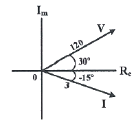
- 20√2 - j20√2
- 20√2 + j20√2
- 40√2 + j40√2
- 40√2 – j40√2
(정답률: 19%)
24. 다음 회로에서 어드미턴스 파라미터 Y11은?
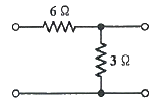
- 1/2 ℧
- 1/3 ℧
- 1/6 ℧
- 1/12 ℧
(정답률: 19%)
25. 어떤 회로의 피상전력이 20kVA이고 유효전력이 15kW 일 때 이 회로의 역률은?
- 0.9
- 0.75
- 0.6
- 0.45
(정답률: 28%)
26. 다음과 같이 두 개의 저항이 직렬로 연결되어 있는 회로에서 각 저항의 전압과의 관계식으로 옳은 것은?
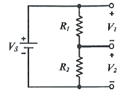
- V1V2 = R1R2
- V1V2 = (R1R2)2
- V1R1 = V2R2
- V1R2 = V2R1
(정답률: 19%)
27.
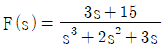
일 때 f(t)의 최종값은?- 0
- 3
- 5
- ∞
(정답률: 19%)
28. 다음 그림 (1)의 회로에서 i(t)의 파형이 그림 (2)와 같을대, 출력 v(t)를 라플라스 변환한 V(s)로 옳은 것은?
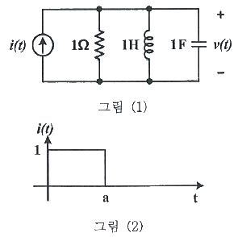
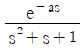
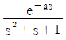
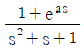
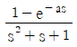
(정답률: 25%)
29. 다음 회로의 노튼 등가회로는?
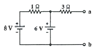
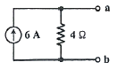
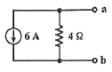
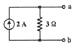
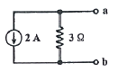
(정답률: 10%)
30. x(t) = te-atu(t) 의 Fourier 변환 X(ω)에서 ω = 0일 때의 값 X(0)은?
- 0
- 1
- 1/a2
- 2/a2
(정답률: 10%)
31. 그림의 회로에서 정현파 입력에 대한 정상상태 응답(steady state response) Vo(t)는?
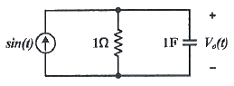
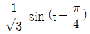
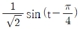
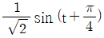
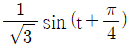
(정답률: 19%)
32. 다음 회로에서 단자 1, 2간의 인덕턴스 L은?
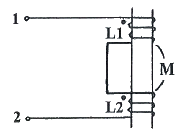
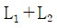
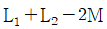
(정답률: 28%)
33. 저항 R = 50Ω, 인덕턴스 L = 1mH, 커패시터 C = 10pF 인 RLC 직렬 공진회로의 양호도 Q는?
- 100
- 200
- 300
- 400
(정답률: 28%)
34. 다음과 같은 회로에서 VS = 80∠0° 일 때, 전체 전류 IT의 크기는 약 몇 A 인가?
- 8.5
- 9.4
- 10.3
- 11.2
(정답률: 10%)
35. 다음 그림의 회로망에서 V1(t) = e-2tu(t)일 때 V2(t)는? (단, 콘덴서는 미리 충전되어 있지 않다.)
(정답률: 19%)
36. 다음 중 그림과 같은 이상 변압기의 방정식으로 옳은 것은?
(정답률: 10%)
37. 다음 회로의 필터 종류는?
- 대역 저지 필터
- 대역 통과 필터
- 고대역 통과 필터
- 저대역 통과 필터
(정답률: 10%)
38. 내부에 기전력 E1, E2, …, En을 포함하는 회로망A의 출력 단자 a-b 사이에서 바라본 테브닌 전압을 ET, 테브닌 임피던스를 ZT라고 할 때, 부하 Z에 흐르는 전류 I는?
(정답률: 19%)
39. 회로망 함수가 그림과 같이 2개 극점과 1개의 영점을 가질 때, 시간영역 f(t)로 옳은 것은?
- f(t) = e-αtcosωt
- f(t) = e-αtsinωt
- f(t) = tsinωt
- f(t) = tcosωt
(정답률: 19%)
40. 시정수 τ인 RL 직렬회로에 t = 0 에서 직류전압을 가하였을 때 t = 4τ에서의 회로전류는 정상치의 약 몇 % 인가? (단, 초기치는 0으로 한다.)
- 63%
- 86%
- 95%
- 98%
(정답률: 19%)
3과목: 전자회로
41. 다음 저역통과필터회로의 임계주파수는 약 몇 kHz 인가? (단, R1=R=1kΩ, R2=10kΩ, C=20nF 이다.)
- 5.86
- 6.96
- 7.96
- 8.89
(정답률: 10%)
42. RC 결합 증폭기에서 구형파 전압을 입력시켜 다음과 같은 출력이 나온다면 이 증폭기의 주파수 특성은?
- 고역특성이 좋지 않다.
- 저역특성이 좋지 않다.
- 중역과 고역특성이 모두 좋지 않다.
- 저역과 고역특성이 모두 좋지 않다.
(정답률: 28%)
43. 이상적인 연산 증폭기의 특징 중 틀린 것은?
- 입력저항이 ∞ 이다.
- 출력저항이 0 이다.
- 전압이득이 0 이다.
- 주파수 대역폭이 ∞ 이다.
(정답률: 28%)
44. 다이오드 직선 검파회로에서 변조도 50%, 진폭 10√2 V 인 피변조파가 인가되었을 때, 부하저항에 나타나는 변조 신호파 출력전압은? (단, 검파 효율은 80% 이다.)
- 0.4 V
- 0.8 V
- 1.2 V
- 4 V
(정답률: 10%)
45. 그림(b)는 회로(a)에 대한 직류 및 교류 부하선을 나타낸 것이다. 회로(a)의 부하저항 RL의 값은 약 몇 kΩ 인가? (단, C1, C2는 교류적으로 단락이다.)
- 1
- 2
- 3
- 4
(정답률: 19%)
46. 두 입력단에 입력되는 신호의 절댓값이 큰 극성에 따라 출력이 나타나며, 부귀환이 없는 무한이득을 사용하는 회로는?
- 비교기 회로
- 위상 동기 루프 회로
- 비안정 멀티바이브레이터 회로
- 슈미트 트리거 회로
(정답률: 10%)
47. 다음과 같은 비안정 멀티바이브레이터의 출력(VO1, VO2) 발진주파수는 약 몇 kHz 인가? (단, R1=R2=47kΩ, RC=560Ω, C1=C2=0.01μF 이다.)
- 1.1
- 1.5
- 75
- 23
(정답률: 28%)
48. 전압증폭도 Av = 5000인 증폭기에 부귀환을 걸 때 전압 증폭도 Af = 40이 되었다. 이때 귀환율 β는?
- 0.0124
- 0.0248
- 0.0496
- 0.0992
(정답률: 28%)
49. 다음 Tunnel Diode의 전류 특성 곡선에서 발진이 일어날 수 있는 영역은?
- A 영역
- B 영역
- C 영역
- 모든 영역에서 발생
(정답률: 19%)
50. 수정 발진회로의 특징 중 옳은 것은?
- AFC회로가 필요하다.
- 주위 온도가 영향이 크다.
- 주파수의 변경이 용이하다.
- 발진 주파수의 안정도가 높다.
(정답률: 28%)
51. BJT를 이용한 B급 증폭기의 최대 전력효율은 약 얼마인가?
- 23%
- 50%
- 79%
- 99%
(정답률: 28%)
52. 정류기에서 파형을 일정하게 유지하기 위해 사용되는 필터는?
- 대역통과필터
- 대역제거필터
- 저역통과필터
- 고역통과필터
(정답률: 19%)
53. 이미터 접지 증폭기에서 ICO가 100μA이고, IB가 1mA일 때, 컬렉터 전류는 몇 mA 인가? (단, 트랜지스터의 α는 0.99 이다.)
- 109
- 120
- 137
- 154
(정답률: 19%)
54. 부궤환 증폭기에 대한 설명 중 옳은 것은?
- 이득만 감소되고 기타 특성에는 변화가 없다.
- 이득이 커지고, 잡음, 왜율, 대역폭 특성이 개선된다.
- 이득이 감소되는 반면 잡음, 왜율, 대역폭은 증가된다.
- 이득, 잡음, 왜율은 감소되는 반면 대역폭이 넓어진다.
(정답률: 28%)
55. 다음 연산 증폭기로 구성한 계측 증폭기(instrumentation amplifier)의 출력 Vout은?
(정답률: 10%)
56. 임의의 입력파형이 규정된 기준 레벨에 이르는 순간을 검출할 수 있어서 전압비교 회로로 널리 사용되는 회로는?
- 슈미트 트리거 회로
- 비안전 멀티바이브레이터 회로
- 블로킹 발진회로
- 이상 발진회로
(정답률: 19%)
57. 커패시터형 필터를 가진 전파 정류 회로에서 맥동률에 대한 설명 중 옳은 것은? (단, 부하 저항은 커패시터와 병렬구조이다.)
- 부하 저항에서는 반비례하고, 커패시터에서는 비례한다.
- 부하 저항에서는 비례하고, 커패시터에서는 반비례한다.
- 부하 저항과 커패시터는 모두에 비해 비례한다.
- 부하 저항과 커패시터는 모두에 비해 반비례한다.
(정답률: 19%)
58. 다음 회로에서 출력전압 Vout은? (단, R1=R2=R3=R4 이다.)
- Vout = V1 - V2
- Vout = V2 - V1
- Vout = 2(V1 - V2)
- Vout = 2(V2 - V1)
(정답률: 25%)
59. 다음 회로의 명칭은?
- Schmitt trigger
- Voltage doubler
- Multivibrator
- Miller sweep
(정답률: 19%)
60. MOSFET의 채널은 어느 단자 사이에 형성되는가?
- 드레인과 바디 사이
- 게이트와 소스 사이
- 게이트와 드레인 사이
- 드레인과 소스 사이
(정답률: 10%)
4과목: 물리전자공학
61. npn BJT의 각 단자의 도핑 농도를 높은 순서대로 나열한 것은?
- 이미터＞컬렉터＞베이스
- 컬렉터＞베이스＞이미터
- 컬렉터＞이미터＞베이스
- 이미터＞베이스＞컬렉터
(정답률: 10%)
62. 다음 중 에피택셜(epitaxial) 성장이란?
- 다결정의 Ge 성장
- 다결정의 Si 성장
- 기판에 매우 얇은 단결정의 성장
- 기판에 매우 얇은 다결정의 성장
(정답률: 28%)
63. 반도체에서 아인슈타인(Einstein)의 관계식은 확산 계수와 무엇과의 관계를 나타내는 것인가?
- 유효 질량
- 캐리어 농도
- 이동도
- 내부 전압
(정답률: 10%)
64. 양자화된 에너지로 분포되나 파울리(Pauli)의 베타 원리가 적용되지 않는 광자를 취급하는 분포 함수는?
- Sommerfeld 분포 함수
- Fermi-Dirac 분포 함수
- Bose-Einstein 분포 함수
- Maxwell-Boltzmann 분포 함수
(정답률: 10%)
65. 평형상태의 트랜지스터에 대한 설명으로 틀린 것은?
- 세 단자가 접속되지 않은 상태이다.
- 페르미 준위는 이미터 쪽이 제일 높다.
- 다수캐리어는 확산운동을 한다.
- 소수캐리어는 표동운동을 한다.
(정답률: 19%)
66. 반도체 IC의 절연 방법(isolation) 중 pn접합에 의한 절연과 비교하여 산화막 절연의 특징이 아닌 것은?
- pn 접합에 의한 절연과 같은 역바이어스가 필요 없다.
- 기생 용량을 감소시킬 수 있다.
- 거의 완벽한 절연이다.
- 제조공정이 간단하다.
(정답률: 10%)
67. 실리콘 n형 반도체에 관한 설명으로 옳은 것은?
- 불순물은 3개의 가전자만을 갖는다.
- 억셉터(acdeptor) 불순물을 첨가하여 제작한다.
- 정공은 소수 캐리어이다.
- 진성 반도체이다.
(정답률: 28%)
68. 접합 트랜지스터의 직류전류증폭률(hFE)에 관한 설명 중 틀린 것은?
- hFE는 이미터 도핑(doping)에 비례한다.
- hFE는 베이스 폭에 비례한다.
- hFE는 베이스 도핑(doping)에 비례한다.
- hFE는 컬렉터 전류의 변화가 큰 경우 증가한다.
(정답률: 28%)
69. 물질에서 직접적으로 전자가 방출될 수 있는 조건이 아닌 것은?
- 열을 가한다.
- 빛을 가한다.
- 전계를 가한다.
- 압축을 한다.
(정답률: 28%)
70. 외부에서 인가된 전압에 의하여 캐리어가 이동하는 것은?
- 드리프트(Drift) 전류
- 확산(Diffusion) 전류
- 이동도
- 캐리어 밀도
(정답률: 28%)
71. 금속에 빛을 비추면 금속표면에서 전자가 공간으로 방출되는 것은?
- 전계방출
- 광전자방출
- 열전자방출
- 2차 전자방출
(정답률: 19%)
72. 전계의 세기 E = 106[V/m]의 평등 전계 중에 놓인 전자의 가속도는? (단, 전자의 질량은 9.11×10-31[kg]이고, 전하량은 1.602×10-19[C]이다.)
- 1.75×1017[m/s2]
- 1.95×1016[m/s2]
- 2.⑤×1016[m/s2]
- 2.35×1014[m/s2]
(정답률: 19%)
73. 어떤 송신기가 10MHz의 전파를 1kW의 출력으로 방사한다면 매 초당 몇 개의 광자(photon)가 방출되는가? (단, 플랑크 상수는 6.624×10-34[J·sec]이다.)
- 1.5×1031[개]
- 1.5×1029[개]
- 9.42×1031[개]
- 9.42×1029[개]
(정답률: 19%)
74. n채널 MOSFET의 단면구조로 옳은 것은?
(정답률: 19%)
75. 터널 다이오드(Tunnel Diode)에서 터널링(Tunneling)은 언제 발생하는가?
- 역방향에서만 발생
- 정전압이 높을 때만 발생
- 바이어스가 영(zero) 일 때 발생
- 아주 낮은 전압에 있는 정방향에서 발생
(정답률: 10%)
76. 진성반도체의 온도변화에 따라 페르미준위는 어떻게 되는가?
- 온도에 따라 변화하지 않는다.
- 온도가 감소하면 전도대로 향한다.
- 온도가 감소하면 충만대로 향한다.
- 온도가 감소하면 가전대로 향한다.
(정답률: 37%)
77. pn접합 다이오드에 역바이어스 전압을 인가할 때, 나타나는 현상에 관한 설명 중 옳은 것은? (단, 브레이크다운 전압(breakdown voltage 보다는 낮은 범위이다.)
- 이온화된 도너와 억셉터 이온이 작아진다.
- 공핍층이 더 넓어진다.
- 공핍층이 좁아진다.
- 공핍층이 없어진다.
(정답률: 28%)
78. 2종의 금속을 접속하고 직류를 흘리면 그 접합부에 온도 차이가 생기는 효과는?
- Thomson 효과
- Hall 효과
- Seebeck 효과
- Peltier 효과
(정답률: 28%)
79. 반도체 재료의 제조 시 고유저항을 측정하는 이유로 옳은 것은?
- 불순물 반도체의 캐리어 농도를 결정하기 때문이다.
- 다결정 재료의 수명 시간을 결정하기 때문이다.
- 진송 반도체의 캐리어 농도를 결정하기 때문이다.
- 캐리어의 이동도를 결정하기 때문이다.
(정답률: 19%)
80. 브래그(Bragg)의 반사조건으로 옳은 것은? (단, d : 주기구조의 폭, λ : 빛의 파장, n : 정수, θ : 결정면의 광선사의 각도이다.)
- 2d·sinθ = nλ
- 2d·tanθ = nλ
- 2d·tanθ = λ/n
- 2d·sinθ = λ/n
(정답률: 10%)
5과목: 전자계산기일반
81. 2의 보수표현이 1의 보수표현보다 널리 사용되는 주된 이유는?
- 음수의 표현이 가능하다.
- 숫자 0의 표현방식이 두 가지이다.
- 연산 시 캐리어 발생여부를 무시해도 된다.
- 10진수로의 변환이 더욱 용이하다.
(정답률: 28%)
82. 연산장치의 누산기(accumulator)에 대한 설명 중 옳은 것은?
- 연산에 이용될 데이터를 읽어들여 일시적 저장 후 필요한 순간에 가산기에 데이터를 제공한다.
- 산술연산의 결과를 일시적으로 기억하는 레지스터이다.
- 데이터 레지스터의 데이터를 연산하여 그 결과를 저장시킨다.
- 연산한 결과의 상태를 기록하여 저장하는 일을 한다.
(정답률: 10%)
83. 다음 중 NOR 게이트와 등가 게이트는?
(정답률: 28%)
84. CPU의 기본 구조가 아닌 것은?
- ALU(Arithmetic Logic Unit)
- 레지스터 세트
- RAM(Random Access Memory)
- 제어 유니트
(정답률: 37%)
85. C언어 프로그램에서 abs(3.562)의 함수 값은? (단, math.h가 정의되었다고 가정한다.)
- -3
- -4
- 3
- 4
(정답률: 19%)
86. 우측 회전(right rotate)을 수행하는 순환 시프트 레지스트에 데이터 (11011001)2가 저장되어 있을 때, 제어 신호가 연속해서 3번 들어온 결과 값은?
- (00111011)2
- (00011011)2
- (11111011)2
- (11001110)2
(정답률: 28%)
87. 플립플롭으로 10진 카운터를 구성하려고 할 때 최소 몇 단위 플립플롭이 필요한가?
- 3단
- 4단
- 5단
- 6단
(정답률: 28%)
88. 인터럽트 처리 과정 중 인터럽트 장치를 소프트웨어를 의하여 판별하는 방법은?
- 스택
- 벡터 인터럽트
- 폴링
- 핸드쉐이킹
(정답률: 37%)
89. 버스 클록(bus clock)이 2.5 GHz 이고, 데이터 버스의 폭이 8비트인 버스의 대역폭은?
- 25 Gbytes/sec
- 20 Gbytes/sec
- 2.5 Gbytes/sec
- 8 Gbytes/sec
(정답률: 10%)
90. 다음 소자 중 전원과 관련된 신호는 제외한 데이터와 주소 연결선의 수가 가장 많은 것은?
- 1K × 4 bit DRAM
- 8K × 4 bit SRAM
- 4K × 1 bit DRAM
- 64K × 8 bit SRAM
(정답률: 37%)
91. Two address machine에서 기억용량 216 이고 Word length가 40bit라면 이 명령어 형식(Instruction Format)에 대한 명령코드는 몇 bit로 구성되는가?
- 5
- 6
- 7
- 8
(정답률: 10%)
92. 다음 회로도는 어떤 동작을 하는 회로인가?
- 비동기식 2진 카운터
- 동기식 10진 카운터
- 링 카운터
- 존슨 카운터
(정답률: 28%)
93. 다음 중 에러를 찾아서 교정을 할 수 있는 코드는?
- hamming code
- ring counter code
- gray code
- 8421 code
(정답률: 28%)
94. 다음은 C언어 프로그램의 일부이다. F의 값으로 옳은 것은?
- 1
- 2
- 3
- 4
(정답률: 28%)
95. 다음 프로그램 작성 과정을 순서대로 바르게 나열한 것은?
- ㉣→㉠→㉡→㉢→㉤
- ㉣→㉠→㉡→㉤→㉢
- ㉠→㉣→㉡→㉢→㉤
- ㉠→㉡→㉤→㉢→㉣
(정답률: 46%)
96. 순서도를 작성하는 일반적인 규칙 중 틀린 것은?
- 국제 표준화 기구(ISO)의 표준 기호를 사용한다.
- 제어 흐름에 따라 위에서 아래로, 왼쪽에서 오른쪽으로 그린다.
- 기호 내부에 처리내용을 자세하게 기술하고, 주석은 기술하지 않도록 한다.
- 문제가 복잡하고 어려울 때는 블록별로 나누어 단계적으로 그린다.
(정답률: 28%)
97. 다음 볼대수식을 최소화 하면?
- BC
- A
- B
- 1
(정답률: 39%)
98. MSB에 대한 설명으로 옳은 것은?
- 맨 왼쪽 비트(최상위 비트)
- 맨 오른쪽 비트(최하위 비트)
- 2진수의 보수
- 8진수의 보수
(정답률: 28%)
99. 어떤 특정한 비트 또는 문자를 삭제할 때 사용하는 연산은?
- AND
- OR
- XOR
- NOR
(정답률: 28%)
100. 다음 회로의 논리식으로 옳은 것은?
(정답률: 19%)
먼저, 두 도체 사이의 전하량을 구해보자. 두 도체가 평행하게 배치되어 있으므로, 두 도체 사이의 전하량은 서로 같다고 볼 수 있다. 따라서, 한 도체에 전하량 Q가 있다면, 다른 도체에도 전하량 Q가 있다고 볼 수 있다.
다음으로, 두 도체 사이의 전기장을 구해보자. 두 도체 사이의 전기장은 각 도체에서의 전기장의 합과 같다. 한 도체에서의 전기장은 전하량 Q와 도체의 반지름 a에 의해 결정된다. 따라서, 한 도체에서의 전기장은 다음과 같이 구할 수 있다.
E1 = Q / (2πε0a)
여기서 ε0는 진공의 유전율이다.
두 도체 사이의 전기장은 한 도체에서의 전기장과 반대 방향으로 작용한다. 따라서, 두 도체 사이의 전기장은 다음과 같이 구할 수 있다.
E = E1 - E2 = Q / (2πε0a) - Q / (2πε0(a+d))
따라서, 두 도체 사이의 정전용량은 다음과 같이 구할 수 있다.
C = Q / V = Q / Ed = (2πε0a(a+d)) / d
이것이 바로 ""의 정답인 이유이다.